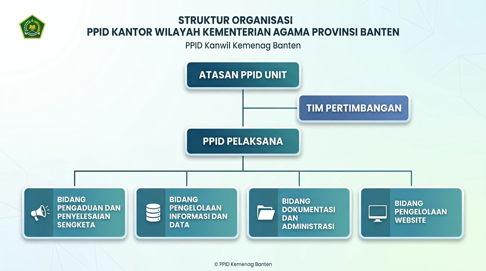

Pejabat Pengelola Informasi dan Dokumentasi
Sebagai bagian dari komitmen instansi pemerintah dalam mewujudkan tata kelola yang transparan, efektif, efisien, akuntabel, serta bebas dari korupsi, kami hadir untuk memastikan hak masyarakat atas keterbukaan informasi publik terpenuhi dengan baik sesuai dengan amanat Undang-Undang Nomor 14 Tahun 2008 dan Keputusan Menteri Agama Republik Indonesia Nomor 1518 Tahun 2025 tentang Pengelola Informasi dan Dokumentasi pada Kementerian Agama.
PPID Kanwil Kemenag Provinsi Banten bertugas sebagai pusat layanan informasi yang cepat, tepat, dan akurat. Kami bertanggung jawab penuh dalam proses penyediaan, penyimpanan, pendokumentasian, pelayanan, hingga pengamanan dokumen serta informasi publik terkait penyelenggaraan layanan keagamaan dan pendidikan keagamaan di Provinsi Banten.
Dalam menjalankan fungsinya, PPID Kanwil Kemenag Provinsi Banten senantiasa berkoordinasi dan terintegrasi secara nasional dengan PPID Utama Kementerian Agama Republik Indonesia, termasuk dalam pengelolaan Daftar Informasi Publik (DIP) serta pengembangan sistem informasi dan website resmi yang berstandar nasional.
Visi, Misi dan Moto
Visi
Terwujudnya pelayanan informasi yang akuntabel
Misi
- Meningkatkan layanan informasi yang cepat, tepat, dan transparan
- Meningkatkan kompetensi SDM pelayan informasi
- Penguatan koordinasi antar PPID lintas sektoral
Moto
Melayani dengan ikhlas
Struktur Organisasi PPID

Memberikan arah kebijakan utama dalam penyelenggaraan pelayanan informasi publik.
Mendukung pengawalan kualitas, validitas dan aspek pertimbangan dalam pelayanan informasi publik.
Mengkoordinasikan pengelolaan dan pelayanan informasi publik di lingkungan Kanwil.
Mengelola informasi sektoral pada unit teknis masing-masing.
Tugas & Fungsi PPID
Menyediakan dan mengelola informasi publik yang berada dalam penguasaan PPID.
Menyimpan dan mendokumentasikan informasi publik secara tertib dan dapat diakses sesuai ketentuan.
Memberikan pelayanan informasi publik secara cepat, tepat dan transparan.
Melakukan koordinasi dengan unit kerja dan PPID terkait dalam pengelolaan informasi publik.
Dasar Hukum
- Undang-Undang Nomor 14 Tahun 2008 tentang Keterbukaan Informasi Publik.
- Keputusan Menteri Agama Nomor 92 Tahun 2019 tentang Pedoman Layanan Informasi Publik bagi Pejabat Pengelola Informasi dan Dokumentasi Kementerian Agama dan Atasan Pejabat Pengelola Informasi dan Dokumentasi Kementerian Agama.
- Keputusan Menteri Agama Republik Indonesia Nomor 1518 Tahun 2025 tentang Pengelola Informasi dan Dokumentasi pada Kementerian Agama.